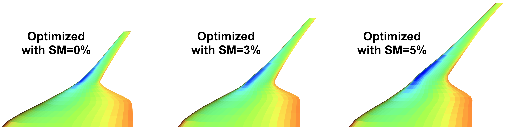
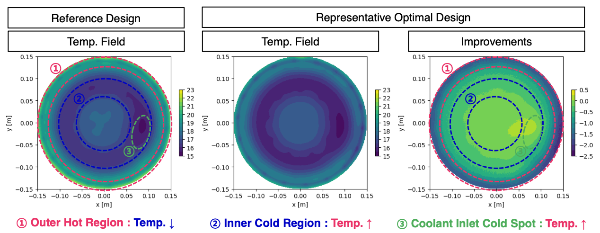

UC San Diego · Mechanical and Aerospace Engineering
Large-Scale Design Optimization Laboratory
We conduct fundamental research in large-scale multidisciplinary design optimization (MDO) to improve the design of complex engineering systems.
The Large-Scale Design Optimization Laboratory at UC San Diego develops novel computational methods, tests them on industrially relevant applications across aerospace and mechanical engineering, and creates open-source research software to enable researchers to use and extend our work.
Our primary focus is system-level, large-scale MDO: using numerical optimization to explore high-dimensional design spaces while considering the interactions among many disciplines and subsystems across multiple operating conditions.
Research applications
All applications →Application
Lift-plus-cruise aircraft
Coupled aircraft sizing, mission analysis, and design under uncertainty.
Methods and publications →

Application
Blended-wing-body aircraft
Aerodynamic, structural, and geometric design of integrated wing–body configurations.
Methods and publications →Application
E175 aircraft
Aircraft optimization with large geometric changes and a deforming analysis mesh.
Methods and publications →Application
Robotic fish
Coupled structural, hydrodynamic, and control design for flexible swimming robots.
Methods and publications →Application
Laser-powered aircraft
Aircraft design coupled to an externally supplied energy source.
Methods and publications →Application
Electric motors
Electromagnetic design and powertrain models for electric aircraft.
Methods and publications →Application
Flapping-wing micro air vehicles
Coupled optimization of wing structure and flapping kinematics for low-power flight.
Methods and publications →Application
Racing quadcopters
Vehicle and trajectory co-design for minimum-time flight through constrained courses.
Methods and publications →

Application
Electrostatic chucks
Multifidelity field models for thermal design of an electrostatic chuck.
Methods and publications →Application
Wind farms
Turbine placement to increase annual energy production in the presence of wake interactions.
Methods and publications →
Application
Concentric-tube surgical robots
Concentric-tube geometry and motion co-design for patient- and population-specific surgical tools.
Methods and publications →Methods
Explore the research →Graph-native modeling
Generating model evaluations and derivatives from a common graph, with efficient execution for coupled and time-dependent physics.
Unsteady potential-flow adjoints
Differentiable potential-flow analysis with reduced memory costs for steady aircraft models and evolving aerodynamic wakes.
MDO under uncertainty
Reducing uncertainty-propagation cost through computational graph structure, response sensitivities, and dimension reduction for multidisciplinary design.
Distributed optimization
Coordinating disciplinary subproblems to manage memory, improve convergence, and satisfy shared design constraints.
Nonlinear programming
Using analysis convergence, directional curvature, and modular algorithms to improve the solution of coupled engineering design problems.
Projection-based model reduction
Adapting reduced simulation bases to changing designs while retaining the accuracy needed for structural and aerodynamic optimization.
Scientific machine learning
Combining physical models and sensitivity information with training data to predict spatial fields for engineering design.
Geometry parameterization
Connecting design variables to component geometry while preserving the dimensions and relationships that define a configuration.
Geometric non-interference constraints
Enforcing the component clearances needed for physically feasible configurations without impairing optimizer conditioning.
Mesh deformation
Updating aircraft analysis meshes through large shape and component-placement changes while retaining derivatives for gradient-based design.
Multiphysics coupling
Connecting disciplinary solvers through shared field representations and transfer operators that preserve the required physical relationships.